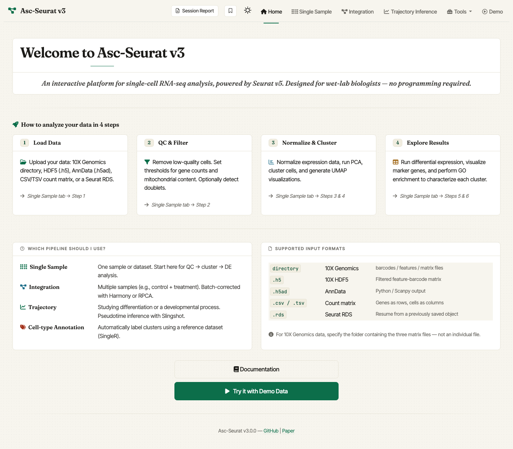
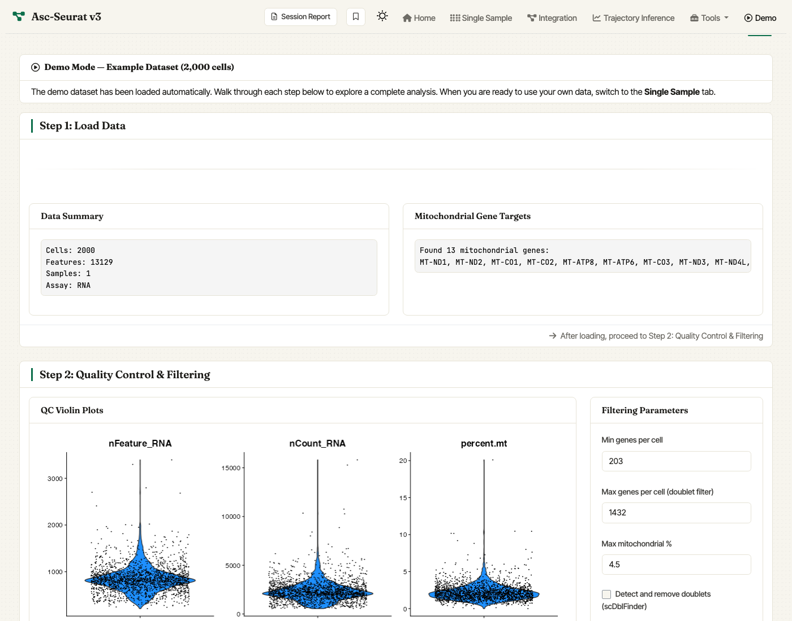

Asc-Seurat is a web application for single-cell RNA-seq analysis, built around Seurat v5. It walks you through the full scRNA-seq data analysis workflow: quality control, normalization, clustering, differential expression, trajectory inference, cell-type annotation, and publication-ready visualization.
The new release (v3) is a full modernization of the app. It includes improvements on the interface, removal of outdated tools, easier installation (either as an R package or a Docker image), while maintaining the easy-to-use, end-to-end workflow that made it accessible to users without programming experience.

Asc-Seurat v3 home screen.
Table of contents
- What you can do with Asc-Seurat
- What’s new in v3
- Quick start
- First run: the Demo tab
- Resource and configuration notes
- Documentation
- Citation
- License
What you can do with Asc-Seurat
- Load data from many formats — 10X Genomics directories, 10X HDF5, CSV/TSV count matrices, AnnData, and existing Seurat objects.
- Quality control and filtering — interactive violin plots, per-cell metric thresholds, and optional doublet removal.
-
Normalization and clustering —
LogNormalizeorSCTransform, UMAP and t-SNE embeddings, and a built-in control to rename clusters with biological labels before moving on. - Differential expression — cluster markers, between-cluster DE, and between-sample DE for integrated datasets.
- Multi-sample integration — declare your samples inline (no separate config file), set per-sample QC, and integrate with RPCA (Seurat) or Harmony.
- Trajectory inference — three supported methods: Slingshot, PAGA, Monocle 3. User can also identify trajectory-associated genes.
- Cell-type annotation — automated labelling with against reference atlases.
- Advanced plots — stacked violin and multi-gene dot plots, with control over gene and cluster ordering.
- Per-gene plot bundles — download a zipped collection of every plot for a selected gene in one click.
- Bookmarking and session reports — capture the state of an analysis and reproduce or share it later.
What’s new in v3
-
Available as R package. Install once from GitHub and launch with
ascseurat::run_app(). - Improved Docker image. The new image is smaller, faster, and bundles every optional dependency so all features are available out of the box.
- Refreshed UI with a built-in Demo to get users familiar with the interface and workflow.
- Quality-of-life additions. Bookmarking, session reports, optional doublet removal, cluster renaming.
Quick start
There are two supported ways to install Asc-Seurat. Docker is the recommended option if you do not want to manage R and Bioconductor dependencies yourself.
Option 1 — Docker (recommended)
Requirements: Docker must be installed and running on your machine. Then, in a terminal, run:
Then open http://localhost:3838 in your browser. That’s it.
Docker containers cannot see arbitrary host paths unless those paths are mounted when the container starts. The easiest pattern is to launch the container from the folder that contains your data and mount that current folder into Asc-Seurat’s data/ directory:
cd "/path/to/folder/that/contains/your/data"
docker run --rm -p 3838:3838 \
-v "$PWD:/home/ascseurat/data:ro" \
pereiralabbio/asc-seurat:3Then enter paths relative to the app workdir, for example data/sample/filtered_feature_bc_matrix. If the mounted folder itself is the 10X matrix directory, enter data/.
If you prefer to paste normal absolute paths from anywhere under your home directory on macOS or Linux, mount your home directory at the same path inside the container:
Then enter the normal absolute path in Asc-Seurat, for example /Users/you/project/sample/filtered_feature_bc_matrix, without wrapping the path in quotes. To expose external drives on macOS, also mount /Volumes:/Volumes:ro. On Windows, mount a folder to a Linux container path such as /home/ascseurat/data and enter data/... in the app.
Option 2 — R package from GitHub
Recommended for users who already work in R and want a lighter install than the Docker image. Requires R ≥ 4.3.0.
From a terminal, install the system dependencies first. Asc-Seurat installs the R packages automatically, but native packages still need compilers and HDF5 available on the machine.
# Ubuntu/Debian
sudo apt-get install -y build-essential gfortran libhdf5-dev pkg-config
# macOS
xcode-select --install
brew install hdf5 pkg-config
curl -LO https://mac.r-project.org/tools/gfortran-14.2-universal.pkg
sudo installer -pkg gfortran-14.2-universal.pkg -target /Follow the upstream BPCells R installation instructions if you need more detail on the HDF5 requirement.
Then, from inside an R or R Studio session:
install.packages(c("pak", "remotes"))
remotes::install_github("bnprks/BPCells/r", upgrade = "never")
pak::pkg_install(
"Pereira-Lab-UF/asc_seurat",
dependencies = c("Depends", "Imports", "LinkingTo")
)The middle line pre-installs BPCells (a hard dependency of monocle3) via remotes, which works around a known pak issue with GitHub sub-directory packages. The pak command installs every R package declared as an app runtime dependency in DESCRIPTION, including PseudotimeDE; it avoids only developer, documentation, and test-only packages. On macOS, PseudotimeDE requires the official R GNU Fortran toolchain above. The error library 'emutls_w' not found means that toolchain is missing or mismatched.
If BPCells still fails through remotes, install it from R-universe before running pak::pkg_install():
install.packages("BPCells", repos = c("https://bnprks.r-universe.dev", "https://cloud.r-project.org"))Then, in the R session, launch the app:
ascseurat::run_app()Python dependencies for PAGA (only needed if you are installing the package and dependencies manually).
PAGA uses Python’s Scanpy stack via reticulate. A one-liner prepares and verifies a managed Python environment:
ascseurat::setup_paga()First run: the Demo tab
You don’t need your own data to try Asc-Seurat. After launching:
- The Home page opens. Click Try it with Demo Data, or use the Demo tab in the top navigation.
- A 2,000-cell subset of the PBMC 3k reference dataset is loaded automatically.
- Step through QC → Normalize & Cluster → DE / Visualization with the defaults. The full walkthrough finishes in a few minutes on a laptop.

The Demo tab auto-loads a PBMC dataset so first-time users can complete the full workflow without supplying data.
Resource and configuration notes
Resource requirements: Single-cell analysis is memory-intensive. Larger datasets need more RAM whether you use Docker or the R package. We recommend at least 8GB for datasets up to ~20,000 cells, and 16GB or more for larger datasets.
Documentation
- User documentation: https://asc-seurat.readthedocs.io/en/latest/
- Source code: https://github.com/Pereira-Lab-UF/asc_seurat
- Issue tracker: https://github.com/Pereira-Lab-UF/asc_seurat/issues
Citation
If you use Asc-Seurat in your research, please cite the original paper:
Pereira WJ, Almeida FM, Balmant KM, Rodriguez DC, Triozzi PM, Schmidt HW, Dervinis C, Pappas Jr. GJ, Kirst M. Asc-Seurat: analytical single-cell Seurat-based web application. BMC Bioinformatics 22, 556 (2021). ***
License
Distributed under the GNU General Public License v3.0. See LICENSE for the full text.